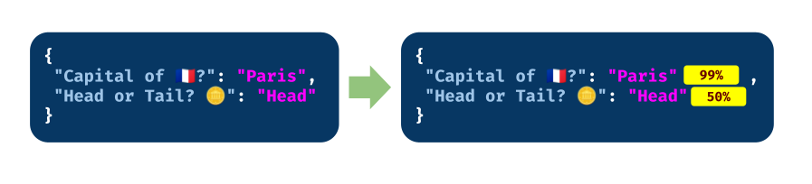

structured-logprobs is an open-source Python library that enhances OpenAI's structured outputs by providing detailed information about token log probabilities.

This library is designed to offer valuable insights into the reliability of an LLM's structured outputs. It works with OpenAI's Structured Outputs, a feature that ensures the model consistently generates responses adhering to a supplied JSON Schema. This eliminates concerns about missing required keys or hallucinating invalid values.
Installation¶
Simply install with pip install structured-logprobs
Then use it this way:
from openai import OpenAI
from structured_logprobs.main import add_logprobs
client = OpenAI()
completion = client.chat.completions.create(
model="gpt-4o",
messages=[
{
"role": "system",
"content": (
"Please output metadata about 'structured-logprobs'"
),
}
],
logprobs=True,
response_format={
"type": "json_schema",
"json_schema": {
"name": "answear",
"schema": {
"type": "object",
"properties": {
"name": {"type": "string"},
"version": {"type": "string"},
},
},
},
},
)
chat_completion = add_logprobs(completion)
print(chat_completion)
For more details, visit Getting Started.
Key Features¶
The module contains a function for mapping characters to token indices (map_characters_to_token_indices) and two methods for incorporating log probabilities:
- Adding log probabilities as a separate field in the response (
add_logprobs). - Embedding log probabilities inline within the message content (
add_logprobs_inline).